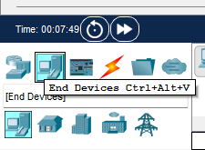

IoT Devices in Packet Tracer
1.1.1 Introduction to IoT Devices in PT
- In simple terms, the IoT is a collection of networked sensors, actuators, and smart devices that gather and share data
- To locate the available sensors and smart devices in Packet Tracer: Select End devices from the "Device-Specific" selection box at the lower-left hand side of the screen
